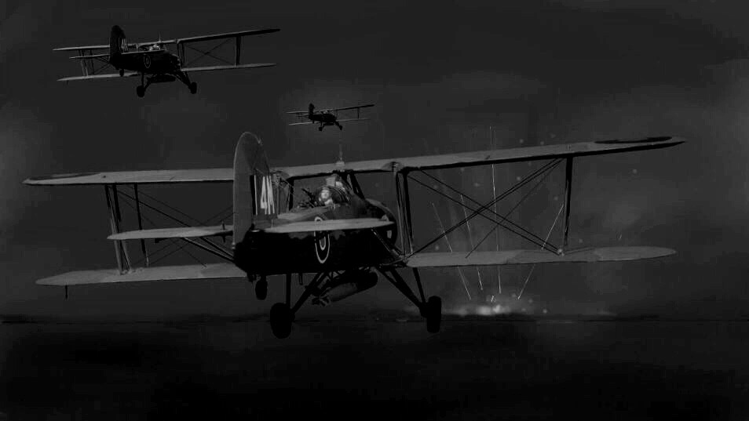
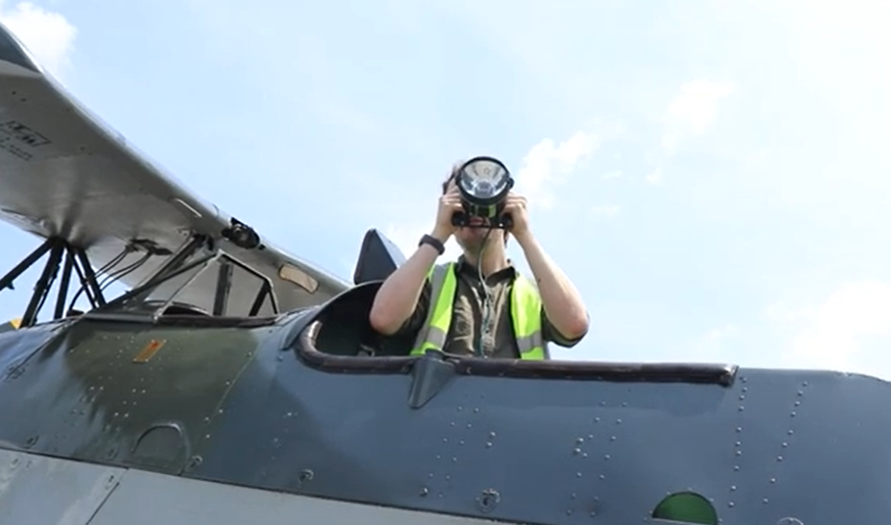
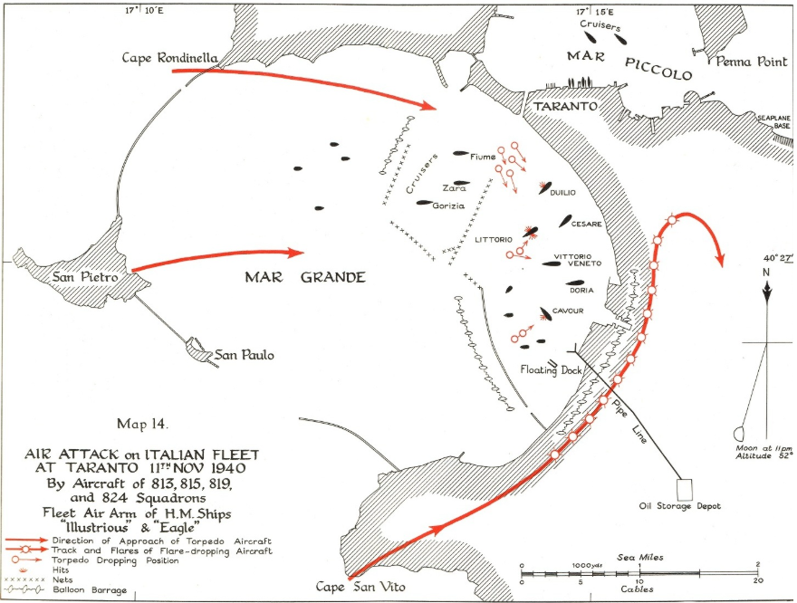
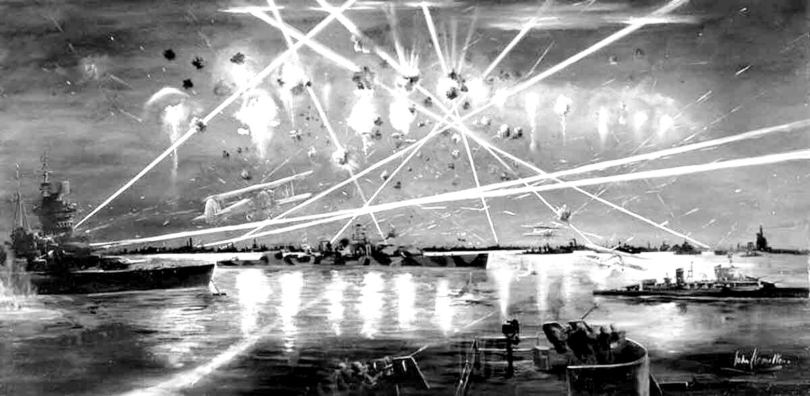
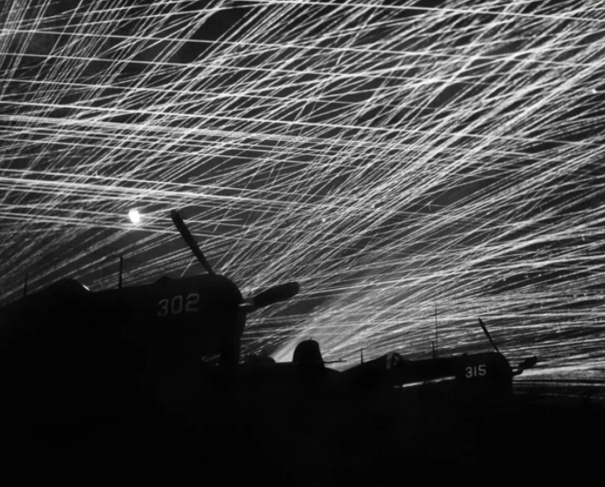
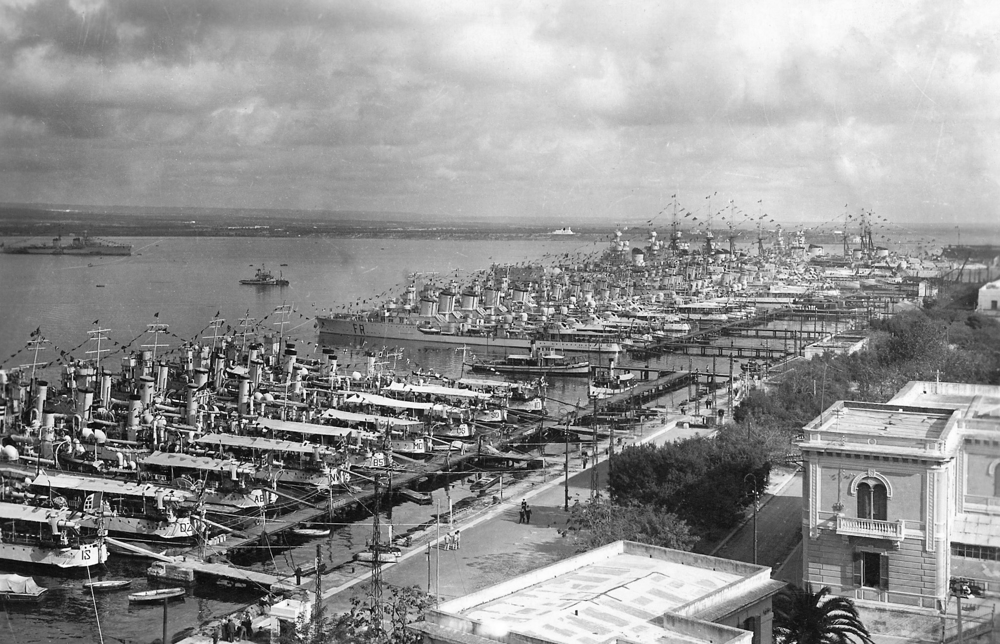
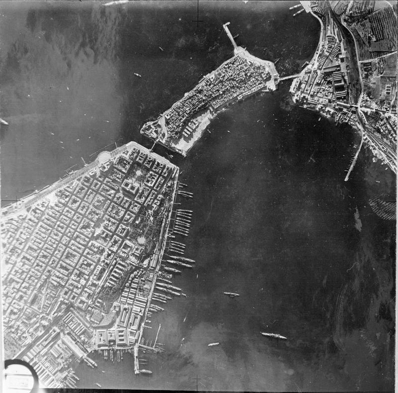

WW2 중 항모에서의 야간 작전 (21) - 불꽃놀이
게시: 2025-07-10T06:30:57+09:00
<어떻게 알았지?> 12대의 소드피쉬들은 2시간 훨씬 넘는 비행 중 구름 탓에 편대가 일부 흩어지긴 했으나, 전문 항법사까지 태운 로열네이비 함재 폭격기답게 전파 유도의 도움 없이도 큰 어려움 없이 타란토 항구에 도착. 그런데 원래 계획대로라면 완벽한 기습 작전이었어야 했는데, 도착해보니 이미 타란토는 누군가 건드려놓은 말벌집 상태. 가장 먼저 타란토 항구로 돌입하여 조명탄을 투하해야 했던 Charles Lamb 대위의 표현에 따르면 타란토 항구는 글자 그대로 에트나(Etna) 화산 같았다고. 이미 하늘 높이 대공포 예광탄이 마구 쏘아올려지고 있었음.

(딱 이 모습)
대체 이탈리아놈들은 소드피쉬의 내습을 어떻게 미리 알고 있었을까? 실은 타란토의 이탈리아군으로서는 그게 그날 밤 들어 벌써 3번째 공습경보였음. 먼저 저녁 8시, 레이더 대신 운용하던 청음소에서 뭔가 먼 곳에서 들려오는 엔진 소리를 포착했고, 그에 따라 공습 경보가 발령됨. 당연히 상공에는 아무것도 없었는데 흥분한 이탈리아군 대공포 진지에서는 허공에 대고 몇 발 발포하기도. 이 공습 경보는 10분만에 해제됨. 그로부터 약 1시간 뒤, 다시 어디선가 엔진 소리가 들려와서 또 공습 경보가 울림. 이 엔진 소리는 마지막으로 타란토의 상황을 염탐하려던 영국공군 Sunderland 수상정의 것. 그러다 이제 진짜 소드피쉬 편대들이 저 멀리 타란토의 불빛이 보이는 곳까지 도착했던 밤 10시 50분, 세번째 공습 경보가 울림. 그 거리에서는 아직 12대의 소드피쉬들 엔진 소리가 들리지 않았을 텐데 어떻게 된 일이었을까? 구름 속에서 흩어졌던 어뢰 장착 소드피쉬 중 1대가 약 20분 전에 먼저 타란토 인근에 도착해 있었던 것. 이 소드피쉬의 조종사였던 Ian Swain 대위는 타란토의 이탈리아 해군 전체와 일기토를 신청할 생각은 추호도 없었으므로 동료들이 도착할 때까지 그 근처에서 그냥 서성거렸고, 이탈리아군은 그 엔진 소리를 듣고 세 번째 경보를 울렸던 것. <탐조등은 대체 왜?> 이런 난리통 속에서도 소드피쉬들은 침착하게 각자 맡은 바 임무를 수행. 먼저 편대장인 Williamson의 소드피쉬에 탑승한 항법사 “Blood” Scarlett 대위가 Aldis 램프를 점멸하여 신호를 주자, 정해진 대로 2대의 조명탄 소드피쉬가 먼저 돌입하여 정해진 해안가를 따라 조명탄을 투하. 그러니까 20분 먼저 도착했던 스웨인 대위가 극구 사양하던 1번 타자 역할을 이 두 대의 소드피쉬가 해내야 했던 것인데, 이들이 가장 위험한 임무를 맡은 것이었을까?

(Aldis 램프란 Aldis라는 사람이 발명한 손에 쥘 수 있는 신호 램프로서, 방아쇠처럼 생긴 스위치를 눌렀다 놓았다 함으로써 모르스 부호를 점멸 신호로 보낼 수 있음. 스칼렛 대위는 왜 무전기를 쓰지 않았을까? 물론 radio silence, 즉 무선 침묵 규율을 지키기 위해서였음. 소드피쉬의 조종사와 항법사 간에는 전성관(speaking tube)를 통해 대화를 주고 받았다고.)

(이 지도의 맨 아래 붉은 선이 조명탄 소드피쉬의 침투 경로. 맨 위 붉은 선은 폭탄 소드피쉬, 중간이 어뢰 소드피쉬.)
이들은 정해진 코스로 날아가 2.4km 상공에서 조명탄을 투하했는데, 치열한 대공포화 속에서도 이들은 거의 위협을 느끼지 않았음. 이유는? 놀랍게도 타란토의 이탈리아 수비대는 탐조등을 전혀 비추지 않고 있었기 때문. 그래서 최초로 조명탄을 투하하는 소드피쉬들에게는 그다지 정확한 대공사격이 이루어지지 않았음. 이탈리아군은 대체 왜 탐조등을 켜지 않았을까? 당시 조명탄 소드피쉬의 조종사였던 램 대위의 짐작에 따르면 이탈리아군은 일부러 그랬던 것. 즉, 공격해오는 적기들이 소드피쉬였으므로 뇌격을 위해 초저공으로 날아올 것이고, 따라서 탐조등은 거의 해면과 평행선을 이룰 정도로 낮게 비추어야 했는데, 그러면 항구 계류장의 전함들을 비출 수 밖에 없으므로 전함들의 대공포 사수들의 눈을 가리는 효과를 냈을 것이기 때문이라는 것. 그러나 그 어둠 속에서 날아오는 적기들이 소드피쉬인지 뭔지 이탈리아군이 정확히 구별했을 것 같지도 않고, 또 소드피쉬라고 해도 어뢰를 달았을지 폭탄을 달았을지 모르는 상황인데 그런 이유로 탐조등을 아예 가동 안 했을 것 같지는 않음. 더군다나 맨 처음 돌입한 소드피쉬들은 2.4km 상공으로 침투했으므로, 그 이론에 따르면 그들을 향해서는 탐조등이 가동되어야 했음. 아무튼 이탈리아군이 왜 탐조등을 쓰지 않았는지는 끝내 불분명.
<대공포 운용 교리> WW2 직전, 이탈리아든 영국이든 대공포 사수들은 실탄 사격 훈련을 하더라도, 실제 항공기에 대해 사격할 기회는 사실상 없었음. 특히 이탈리아군의 경우, 야간에 공습이 있을 경우 어떤 식으로 사격을 해야 한다는 교리가 아직 뾰족하게 정리된 바가 없었음. 그래서 선두의 소드피쉬 2대가 2.4km 고도에서 낙하산 조명탄을 투하하여 밝은 빛이 항구를 비추자, 엉뚱하게도 이탈리아군 대공포들이 그 낙하산 조명탄 불빛을 향해 맹렬히 불을 뿜었음. 어차피 당장 눈에 보이는 적기가 없는데 적기가 뿌린 것이 분명한 조명탄은 눈에 보이니, 가만히 있는 것보다는 그거라도 쏘자는 생각과, 또 저 조명탄을 명중시켜 조명을 끄는 것이 아군에게 도움이 된다는 생각, 거기에 저 조명탄이 있는 곳 어딘가에 적기가 아직 있을 수도 있다는 생각이 뒤죽박죽 되어 나타난 결과. 물론 그 조명탄들을 뿌린 소드피쉬 2대는 이미 안전한 다른 지점의 어두운 상공에서 이 모든 것을 여유있게 내려다보고 있었음.

(소드피쉬가 투하한 조명탄들의 모습과 거기에 발포하는 이탈리아군. 다만 저기서 묘사된 탐조등 불빛은 실제로는 전혀 없었다고.)
타란토 공습 이전, 이탈리아 해군에게 내려진 항구 내에서의 대공포 운용 원칙이 하나 있었는데, 그건 항구에 정박한 상태에서 공습이 있더라도 적 항공기가 자함을 공격하는 것이 분명하지 않다면 발포하지 말라는 것. 이건 다소 의아함을 자아내는 교리인데, 조금 더 생각해보면 꽤 합리적인 교리. 이탈리아 해군의 순양함이든 전함이든 모두 꽤 강력한 대공포들을 갖추고 있었는데, 당시 대공포의 사격은 barrage fire, 즉 탄막 사격으로서, 적기를 조준 사격하여 격추시키는 것이 목적이라기보다는 군함 주변을 탄막으로 감싸서 적기가 공격을 위해 접근할 엄두를 내지 못하게 하는 것. 그런데 그런 대공포 탄막 사격을 마음껏 쏘아댈 경우 상당수의 포탄이 항구의 아군함들 및 타란토 시내에 떨어질 것. 따라서 대공 탄막 사격은 지상의 대공포대에게 맡기고 명확히 눈에 보이거나 탐조등에 걸려든 적기만 조준 사격하는 것이 부차적인 피해를 줄이기 위한 정답.

(1945년 오끼나와 인근에서 미해군 항모에서의 대공 탄막 사격)
그런데 그 교리가 실전에서 잘 지켜졌을까? 그건 명확하지 않음. 실제로 뇌격기들의 공격 대상이 아니었던 순양함과 구축함 등의 일부에서는 아예 대공포를 쏘지 않았음. 그리고 그 덕분에 원래대로라면 폭탄 소드피쉬들에게 공격을 받았어야 할 중순양함들은 소드피쉬의 눈에 띄지 않아 공격을 받지 않았음. 처음에는 마구 대공포를 쏘아대던 일부 순양함과 구축함에서도 눈먼 대공포를 쏘아 봐야 적기에게 '여기 좋은 목표물이 있소'라고 광고하는 꼴이라는 것을 깨닫고 대공포 사격을 멈추기도 함. 그러나 여러 군함들이 눈먼 대공 사격을 마구 날려댔고, 특히 명확한 공격 대상이었던 전함들에서는 소드피쉬 조종사들이 질겁할 정도로 맹렬한 탄막 사격을 실시. 특히 어뢰를 장착한 소드피쉬들이 저공으로 날아들자, 전함에서나 해안 대공포대에서나 이들을 노리고 낮은 앙각으로 맹렬히 사격. 그런데 그렇게 낮게 사격을 하자, 건너편에 정박해있던 상선들에게 대공포탄이 명중. 이탈리아군도 이 사실을 곧 깨닫고 대공포 사격을 좀 높게 조준했음. 덕분에 소드피쉬들은 맹렬한 탄막 아래로 유유히 날아서 어뢰를 투하. 이탈리아 대공포 사수들로서는 미치고 환장할 노릇이었을 듯.

(1930년대 타란토 항구의 구축함, 순양함 부두의 모습)

(11월 11일 공습 직전에 영국 공군 정찰기가 찍어온 구축함, 순양함 부두와 그 너머의 반듯반듯한 타란토 시내 건물들 모습)